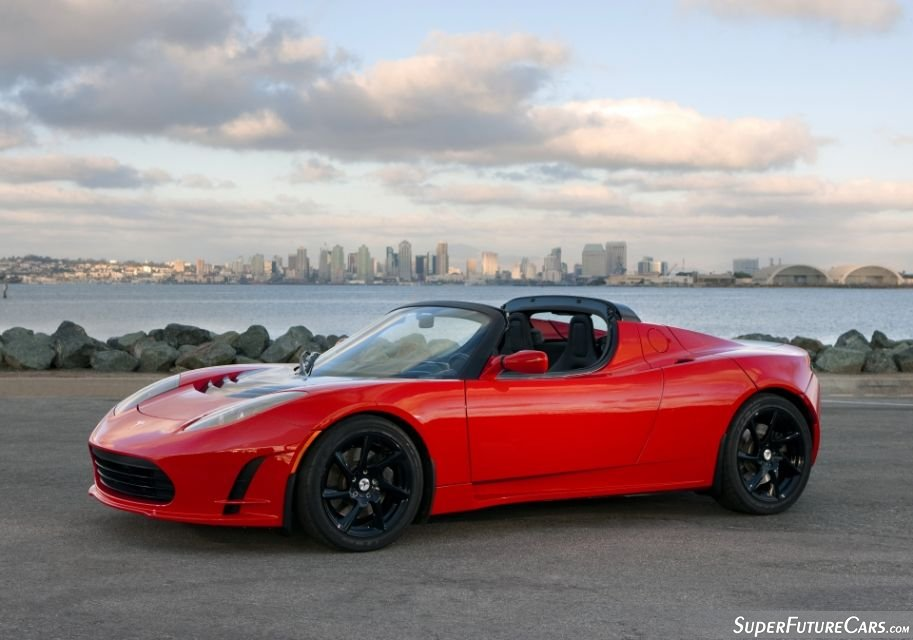
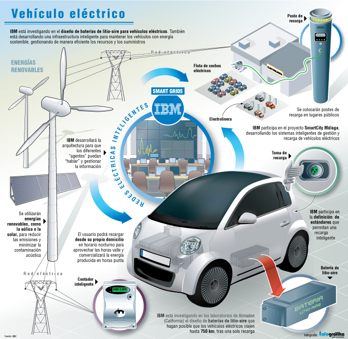

El Tesla Roadster es un cotxe esportiu elèctric i va ser el primer que va fabricar l'empresa Tesla Motors. Es va presentar per primera vegada públicament al Saló de l'Automovil de 2006 a Santa Mònica (EE.UU.).
El seu creador va ser Elon Musk, que també va inventar, PayPal o Hyperloop
La idea va surgir quan es va veure que es contaminava massa i es tenien que reduir les emissions. Fins aquell moment tots els cotxes que hi havia elèctrics eres "convencionals" i van veure que hi havia una necessitat per a algunes persones d'un cotxe elèctric esportiu i que contaminés menys, i d'aquí al Tesla Roadster.

Funciona com un cotxe elèctric, en contes de motors té bateries i aquestes fan la funció del motor.
Alguns cotxes els pots carregar a casa i altres has d'anar a les estacions de càrrega de les empreses fabricants.
(Clic a la imatge per fer-la més gran)
Ens aporta velocitat i contaminar menys el medi ambient. Gràcies al Tesla, potser sabran per on seguir estudiant i innovant en el món dels cotxes elèctrics, es podran descobrir nous usos per a les bateries...etc.